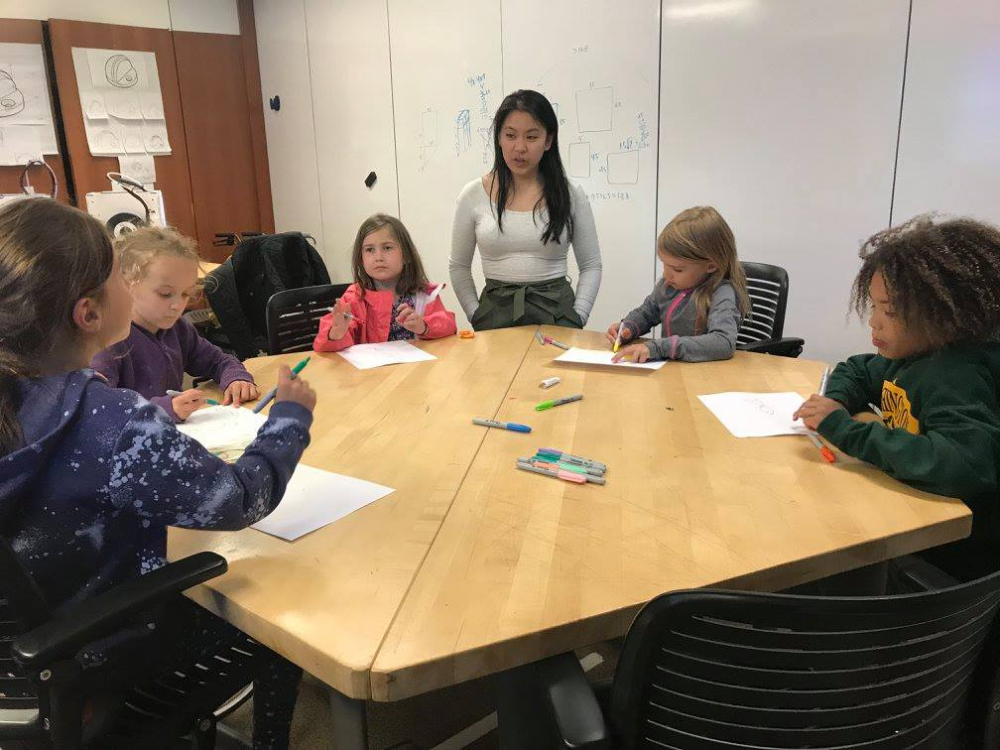

MakerGirl is a non-profit organization that educates girls aged 7-10 about STEM through 3D printing and other cutting edge technologies. Since its beginning at the University of Illinois Urbana Champaign, MakerGirl has inspired over 3,000 young girls and aims to reach at least 10,000 by 2023.
As part of their plan to reach as many girls as possible, MakerGirl started an academy at Northwestern. It has officially been running since January when I joined as a co-founder and co-director.
Accomplishments I'm proud of:
- With no official marketing plan and a team of 6, we ran our first 3 sessions successfully with a full sign-up of 8-12 girls
- Elaborated on said marketing plan to build a network of elementary schools, both local and in Chicago
- Recruited 10 university students at Northwestern to join our growing team
- Teamed up with Codeverse, a coding academy for kids, and the Girl Scout Troops of Greater Chicago and Northwest Indiana, which spans 50,000 girls, to host sessions
A typical 2 hour session runs like this: When the girls arrive, we'll play an icebreaker so they know each others names. We introduce the theme of the session and talk about 3D printing, since most of the girls have never interacted with it before. The girls get some paper and pencils to start brainstorming what their design will be. Themes in the past have included Spring, Underwater, Outer Space, and Winter Wonderland. After some time brainstorming, they move to our computers where they translate their design into TinkerCad, a kid-friendly computer modeling program where they click and drag shapes.
If you know someone who would love to be a MakerGirl, sign up for our listserv to stay updated. We also have a Facebook group and a general MakerGirl Instagram, where you can see our exciting new academy expansions and our rapid progress